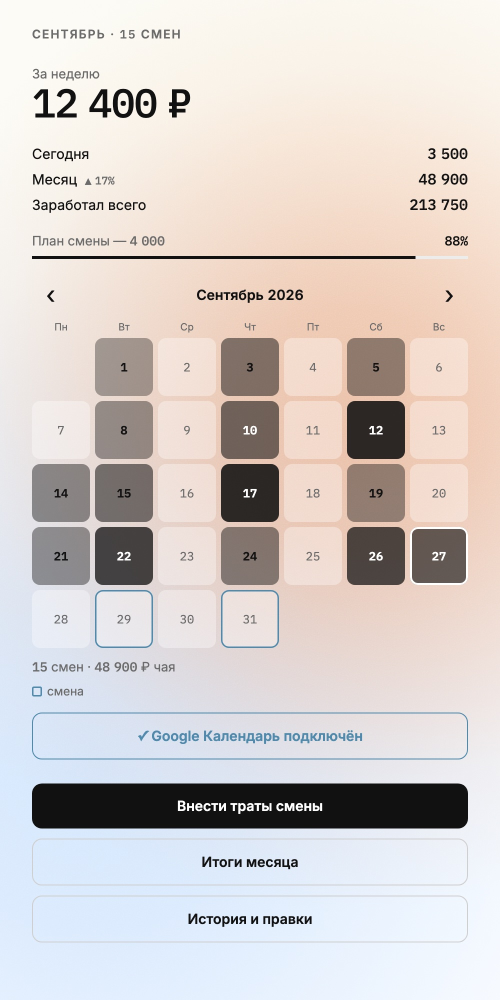
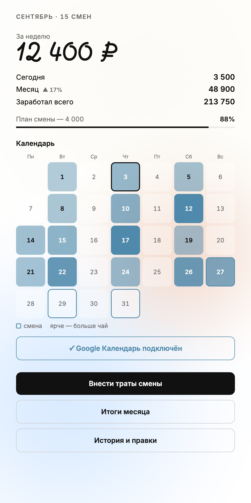

Работы
2025–2026


Бот для учёта чаевых ↗
Запись одним сообщением, пока в другой руке поднос. 25 версий экрана за 8 дней и разбор, почему коллеги бота не поставили.
Личный проект · 2026
«Мацца» — замороженная римская пицца ↗
Кому продавать пиццу, которую ещё не производишь: финансовая модель, отказ от ресторанов и сайт для закупщика и покупателя.
Личный проект · с марта 2026


Зерно для «Будем Знакомы» ↗
Ценники, меню, канал и сайт, чтобы зерно в кофейне начали замечать. Сайт запустил к Новому году, продажи измерить не успел.
Работа бариста · 2025


Бронирование капсульного отеля ↗
Бронь капсулы в аэропорту за 4 шага и будильник, чтобы не проспать рейс. Учебное задание.
Учёба · Бюро ГорбуноваКак я работаю
выводы из кейсов- Проверяю замером, а не на глаз. На глаз всё выглядит «примерно нормально».«Мацца»: потерянная ось, разъехавшиеся заголовки
- Эффектное решение защищает себя тем, что нравится автору. Это плохой аргумент.«Мацца»: презентация перед товаром
- То, что не проверено, описываю так же подробно, как то, что сделано.Все кейсы: раздел «Что проверено и что нет»
- Довожу до живого продукта: часть решений видна только на работающем экране.Бот: неразрывный пробел в моноширинном шрифте